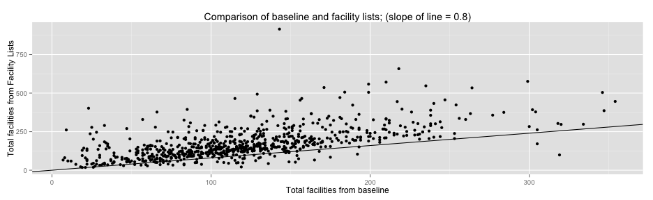
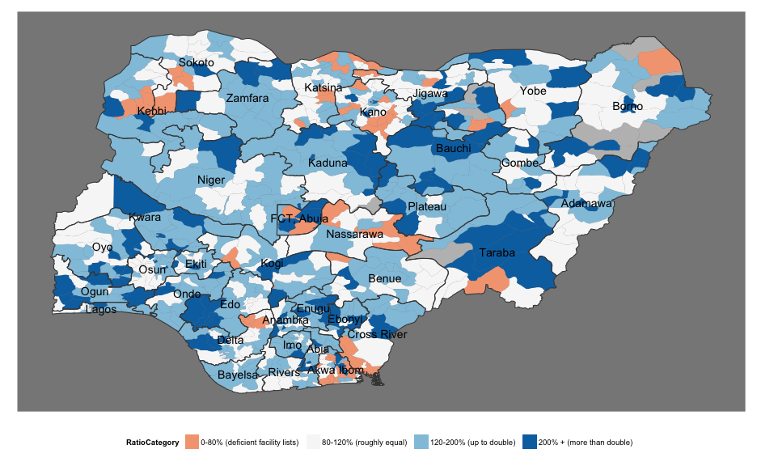
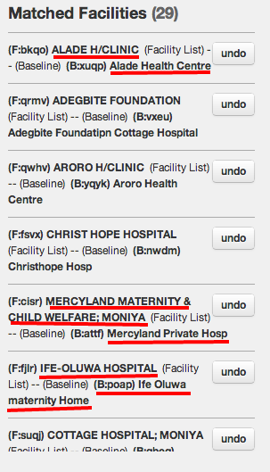
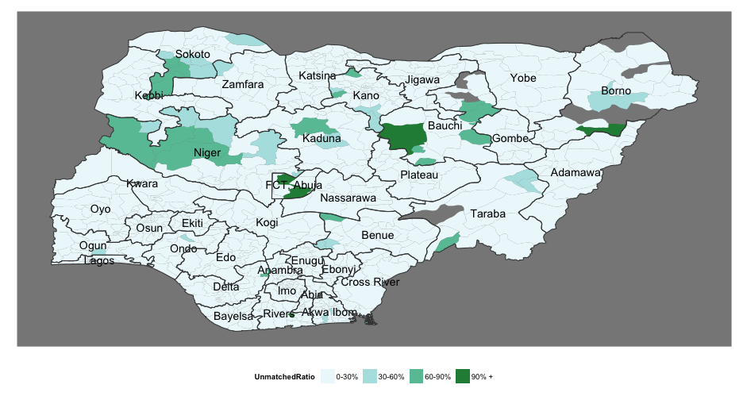
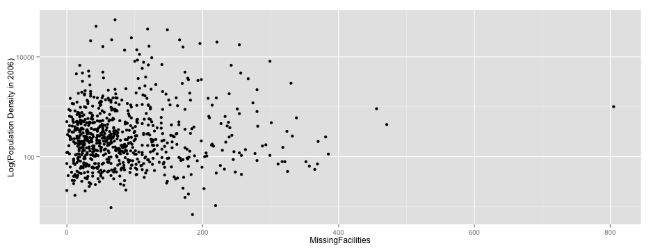

- Mopup -- a process overview
- Outcomes of the matching process
- Missing facilities
- Baseline coverage, a retrospective
NMIS Mopup
the status, now, and future needs
Data Team, Modi Research Group
Outline
Mopup, process overview
The stages of the mopup process include:
- Facility Lists. Obtained by TAs, and entered using the formhub data tool to EI.
- Data Matching. TAs matched the facilities submitted through baseline with data from baseline.
- Analysis to scope out the work required for mopup (this presentation).
- Teams go to field and survey the "outstanding" facilities.
Facility List process overview
Facility lists were submitted for 773 of 774 LGAs. A quick visual comparison of the number of facilities per LGA, comparing the facility lists and the baseline list is belows (each point is an LGA). Each point below the line is an LGA for which the number of facilities in the facility list was less than 80% of those in baseline; meaning the officials' lists are incomplete by a 20% margin.

There are 59 such lgas.
Facility List Overview (2)

Matching process (1)

Matching process (2)
Some examples of why matching is necessary:

Progress towards the matching exercise
In total, 92% of the facilities in baseline have been marked as either being a match, or as a no-match.
Progress towards the matching exercise (2)
Some LGAs have a high proportion of baseline facilities marked as not being a match.

Missing facilities
Missing facilities are defined as any facility from a facility list that was not matched to a facility in baseline. An aggregate view is below:
Under 100 100-200 200+ NA
NumberOfLGAs 526 172 70 6
FacilitiesMissing 24037 23757 19669 <NA>
Missing facilities vs. density of LGAs
Question: Is there a relationship between population density and the number of missing facilities? (Ie, are the LGAs in which more facilities are missed very dense (eg. cities)?)

Answer: No.
Missing facilities across Nigeria
Baseline coverage (matched / facility list)
Thank you
Modi Research Group
- Data Team - Salah Chafik, Zaiming Yao, Prabhas Pokharel
- Software Team - Mark Johnston, Myf Ma, Prabhas Pokharel